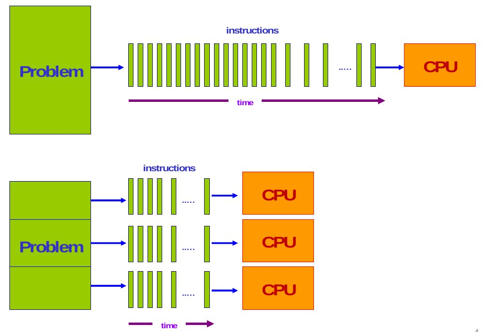
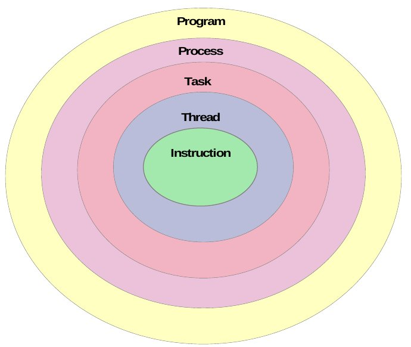

并行计算（parallel computing）是由运行在多个部件上的小任务合作，来求解一个规模很大的复杂计算问题的一种方法。

//TODO
－节省时间
－解决大型问题
－利用并发优势
//TODO
并行化的主要方法是分而治之：

任务并行——根据问题的求解过程，把任务分成若干子任务(任务级并行或功能并行)。
数据并行——根据处理数据的方式，形成多个相对独立的数据区，由不同的处理器分别处理。
指令并行——。。。。。
Program: an executable file with one or multiple tasks.
Process: instance of a program in execution. It has its own address space, and
interacts with other processes only through communication mechanisms
managed by the OS.
Task: execution path through the address space that has many instructions.
(Some times task and process are used interchangeably).
Thread: stream of execution used to run a task. It’s a coding construct that does
not affect the architecture of an application. A process might contain one or
multiple threads all sharing the same address space and interacting directly.
Instruction: a single operation of a processor. A thread has one or multiple
instructions.